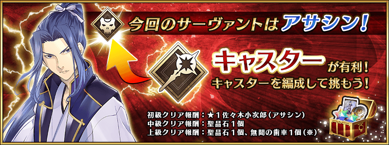
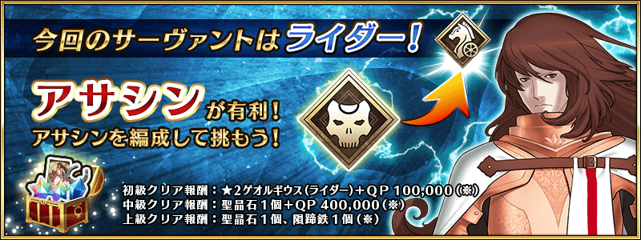
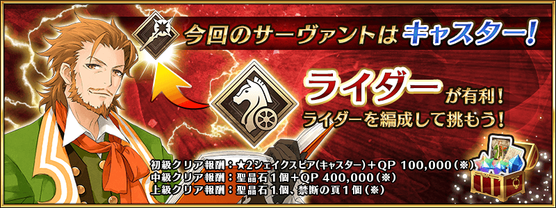
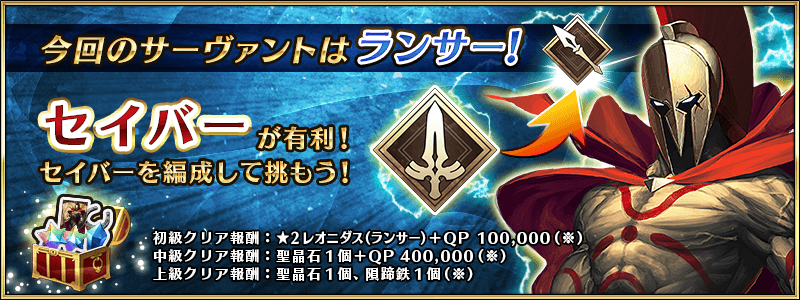
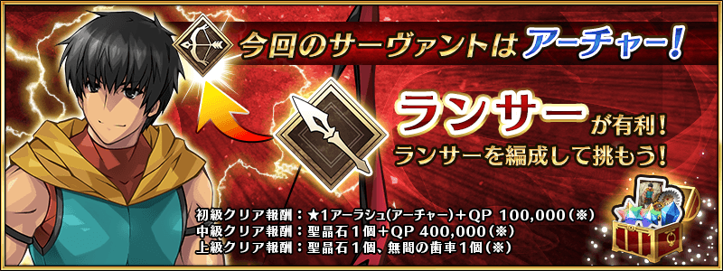
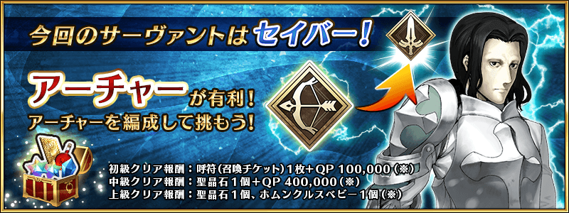
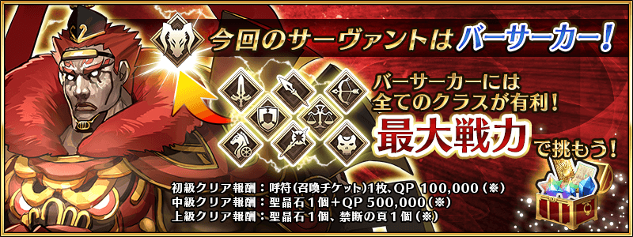

強力なサーヴァントたちとのバトルがカルデアゲートに出現しています。
サーヴァントたちは、同じクラスでパーティを組んでいるようです。
有利なクラスでパーティを編成し、激闘を勝ち抜きましょう！

【イベント開催期間】
2015年8月19日(水)16:00～2015年9月9日(水)13:59
【イベント概要】
期間ごとに、カルデアゲートにクエストが登場します。
クエストクリア報酬として、各クラスのサーヴァントや、聖晶石、呼符（召喚チケット）などを手に入れることが出来ます。
■8月19日（水）16:00～8月22日（土）13:59

■8月22日（土）14:00～8月25日（火）13:59

■8月25日（火）14:00～8月28日（金）13:59

■8月28日（金）14:00～8月31日（月）13:59

■8月31日（月）14:00～9月3日（木）13:59

■9月3日（木）14:00～9月6日（日）13:59

■9月6日（日）14:00～9月9日（水）13:59

※注意事項
・報酬は各クエスト１回まで受け取れます。
・各クエストは繰り返しバトルを行うことが出来ます。
・（※）の報酬はプレゼントボックスに直接付与されます。
今後とも「Fate/Grand Order」をよろしくお願いいたします。